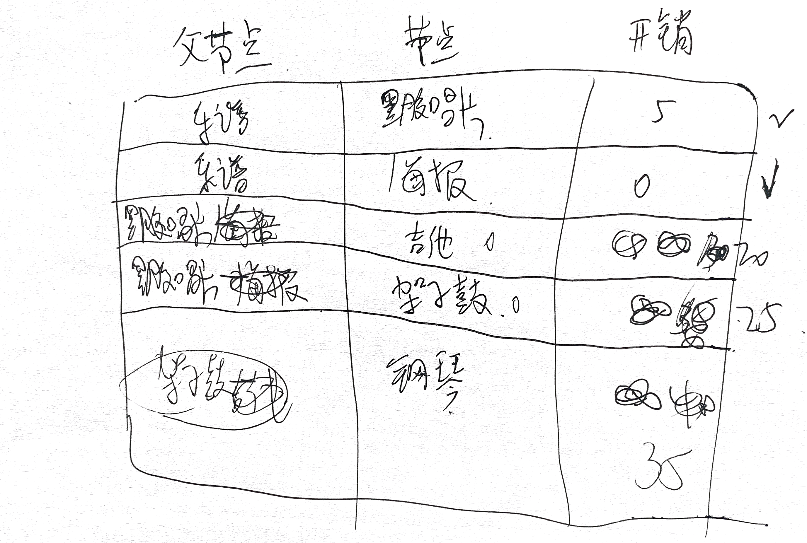
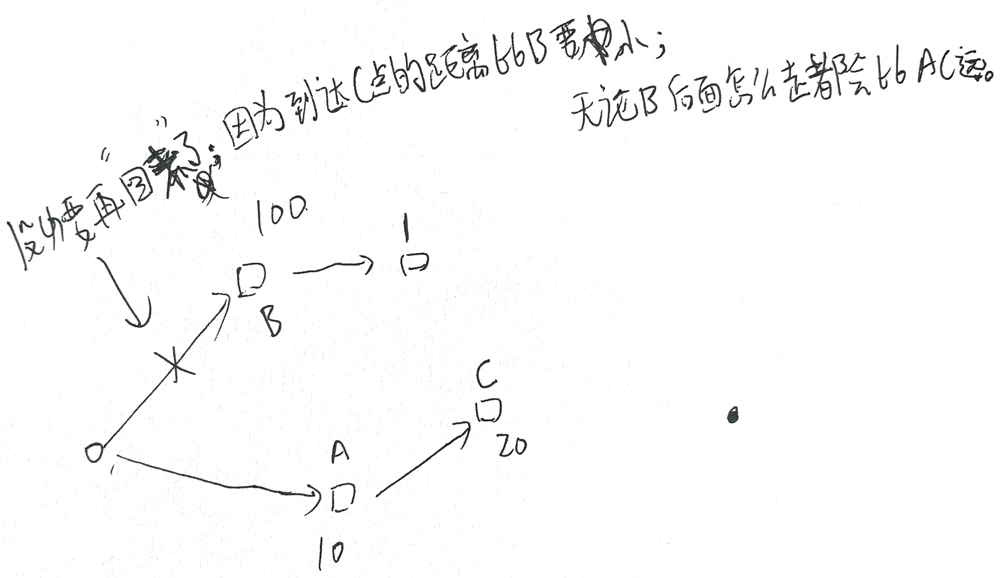

广度优先搜索算法可以找出段数最少的路径；要找出最快的路径（边有权重），可以采用狄克斯拉特算法。
在前一章，你使用了广度优先搜索来查找两点之间的最短路径，那时“最短路径”的意思是段数最少。在狄克斯特拉算法中，你给每段都分配了一个数字或权重，因此狄克斯特拉算法找出 的是总权重最小的路径。
更多内容详见书籍。
狄克斯特拉算法用于每条边都有关联数字的图，这些数字称为权重(weight)。
带权重的图称为加权图(weighted graph)，不带权重的图称为非加权图(unweighted graph)。
要计算非加权图中的最短路径，可使用广度优先搜索。要计算加权图中的最短路径，可使用狄克斯特拉算法。
在无向图中，每条边都是一个环。狄克斯特拉算法只适用于有向无环图(directed acyclic graph，DAG)。
更多内容详见书籍。
这部分内容书中写的极好。好到我都舍不得 copy 他的内容因为担心会“损坏”原来的美。强烈建议认真阅读以及在阅读的时候自己画一个如下的表一步一步进行更新。

为帮助理解，可以思考下面的内容：

书中有句内容，可以非常概括狄克斯拉特算法的关键理念：找出图中最便宜的节点，并确保没有到该节点的更 便宜的路径!
更多内容详见书籍。
如果有负权边，就不能使用狄克斯特拉算法。因为负权边会导致这种算法不管用。
不能将狄克斯特拉算法用于包含负权边的图。在包含负权边的图中，要找出最短路径，可使用另一种算法——贝尔曼·福德算法(Bellman-Ford algorithm)。
节点的开销指的是从起点出发前往该节点需要多长时间。
这部分内容也请直接看书籍对应部分。写的很不错。
这里直接给出最终的代码：
graph = {} graph['start'] = {} graph['start']['a'] = 6 graph['start']['b'] = 2 graph['a']={} graph['a']['fin'] = 1 graph['b'] = {} graph['b']['a'] = 3 graph['b']['fin'] = 5 graph['fin'] = {} infinity = float('inf') costs = {} costs['a'] = 6 costs['b'] = 2 costs['fin'] = infinity parents = {} parents['a'] = "start" parents['b'] = 'start' parents['fin'] = None processed = [] # 找出最小开销节点的函数 def find_lowest_cost_node(costs): lowest_cost = float('inf') lowest_cost_node = None # 与下面的 None 对应 for node in costs: # 遍历所有的节点 cost = costs[node] if cost < lowest_cost and node not in processed: # 如果当前节点的开销更低且未被处理过 lowest_cost = cost # 就将其视为开销最低的节点 lowest_cost_node = node # 返回的是“a”、“b”、“fin” return lowest_cost_node node = find_lowest_cost_node(costs) # 在未处理的节点中找到开销最小的节点 while node is not None: # 这个 while 循环在所有节点被处理过后结束 cost = costs[node] # 返回的是 costs['a'] = 6 等 neighbors = graph[node] # 以 graph['start'] 为例，返回的是{'a': 6, 'b': 2} for n in neighbors.keys(): # 遍历当前节点的所有邻居 new_cost = cost + neighbors[n] # 返回的是“往前走一个结点”的最短路径（经过当前结点） if costs[n] > new_cost: # 如果经当前节点前往该邻居更近 costs[n] = new_cost # 就更新该邻居的开销 parents[n] = node # 同时将该邻居的父节点设置为当前节点 processed.append(node) # 将当前节点标记为处理过 node = find_lowest_cost_node(costs) # 找出接下来要处理的节点，并循环 print("Cost from the start to each node:") print(costs)
运行结果：
Cost from the start to each node: {'a': 5, 'b': 2, 'fin': 6}